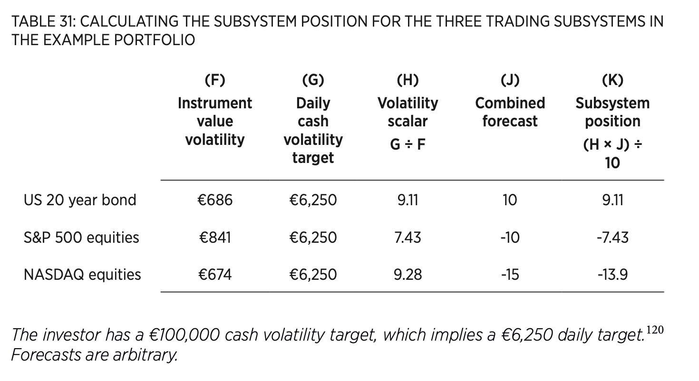
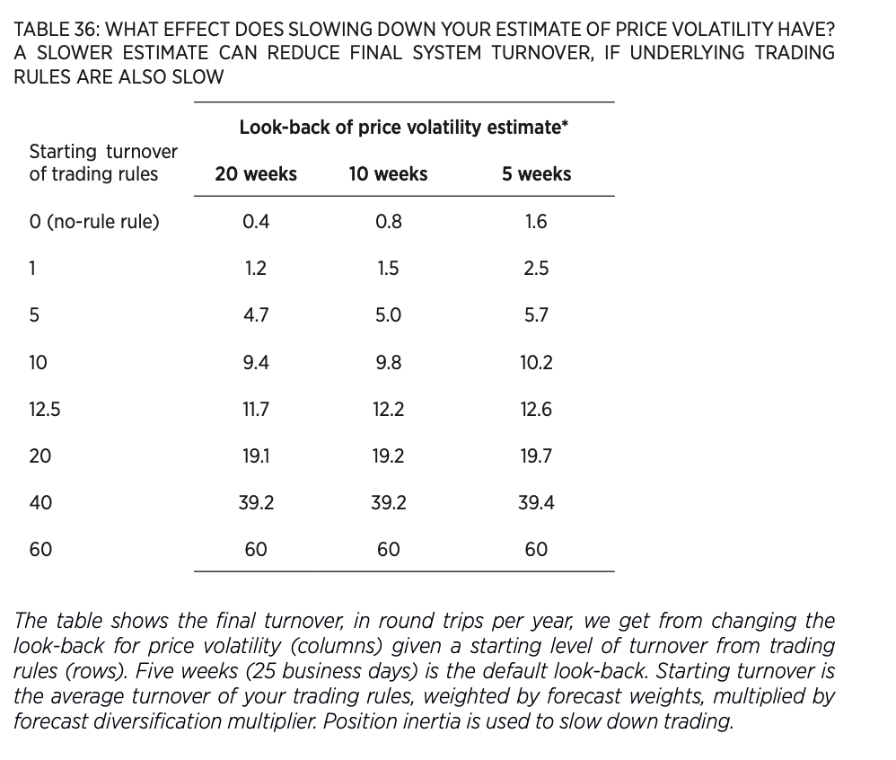

Systematic Trading Framework
1 Framework overview
1.1 Why a modular framework?
- Flexibility: The most obvious benefit of a modular design is flexibility. If you don’t like the position sizing component, or any other part of the framework, you can replace it with your own.
- Transparent Modules: This should give you the understanding and confidence to adapt each module, or create your own from scratch.
- Individual components with well defined interface: if you use a new trading rule then the rest of the modular trading system framework should still work correctly and give you appropriately sized positions. To do this the individual components need to have a well defined interface – a specification describing how they interact with other parts of the system. For example in the framework it will be important that a trading rule forecast of say +1.5 has a consistent meaning, no matter what style of trading or instrument you are using.
- Getting the boring part right: The part of the trading system wrapped around the trading rules, the framework, is something that’s easily ignored. Creating it is a boring task compared with developing new and exciting trading rules, or making your own discretionary forecasts. But it’s incredibly important. The framework will work correctly for any trading rule that produces forecasts in a consistent way with the right interface. So it won’t need to be radically redesigned for any new rules.
1.2 The Elements of the Framework
The Table shows the components you’d have in a small trading system with two trading rules, a total of four trading rule variations, and two instruments. You first create a trading subsystem for each instrument. Each subsystem tries to predict the price of an individual instrument, and calculate the appropriate position required. These subsystems are then combined into a portfolio, which forms the final trading system.
- Instruments to trade: Instruments are the things you trade and hold positions in. They could be any financial asset including directly held instruments such as equities and bonds, or derivatives like options, futures, contracts for difference and spread bets. You can also trade collective funds such as exchange traded funds (ETFs), mutual funds, and even hedge funds.
- Forecasts: A forecast is an estimate of how much a particular instrument’s price will change, given a particular trading rule variation. For example a simple equities strategy might have three forecasts: two variations on a trend following rule, each looking for different speeds of trend, and a separate equity value trading rule with a single variation. If you are trading two instruments as in table 15 then there will be a total of 3 × 2 = 6 forecasts to make. The trading rules which produce forecasts are the engine at the heart of all trading systems used by staunch systems traders. The biggest difference between strategies will be in which rules and variations are used, and which instruments are traded. In comparison the rest of the framework will be fairly similar.
- Comined Forecasts: You need a single forecast of whether an instrument will go up or down in price, and by how much. If you have more than one forecast you will need to combine them into one combined forecast per instrument, using a weighted average. To do this you’ll allocate forecast weights to each trading rule variation.
- Volatility Targetting: It’s important to be precise about how much overall risk you want to take in your trading system. I define this as the typical average daily loss you are willing to expose yourself to. This volatility target is determined using your wealth, tolerance for risk, access to leverage and expected profitability. Initially we’ll assume that you’re putting all of your capital into a single trading subsystem, for just one instrument.
- Scaled Positions: You can now decide how much of the underlying asset to hold based on how risky your instruments are, how confident you are about your forecasts, and your volatility target. The positions you will calculate assume for now that you’re just trading one isolated instrument, in a single trading subsystem.
At this point you’ve effectively got a complete trading system, but for a single instrument. Just as the cells in the human body are each individual living organisms, these trading subsystems are self-contained units, but in the next stage you’ll be putting them together.
Portfolios: To get maximum diversification you’d usually want to trade multiple instruments and put together a portfolio of trading subsystems, each responsible for a single instrument. This requires determining how you are going to allocate capital to the different subsystems in your portfolio, which you will do using instrument weights. After applying this stage you’ll end up with portfolio weighted positions in each instrument, which are then used to calculate the trades you need to do.
Speed and Size: This isn’t a separate component in the framework, but a set of principles which apply to the entire system. When designing trading systems it’s important to know how expensive they are to trade, and whether you have an unusually large or small amount of capital. Given that information, how should you then tailor your system?
2 Instruments
2.1 Necessitites
- Data availability: At a minimum you will need accurate daily price information.
- Minimum sizes: Minimum sizes reduce the granularity of what you can trade. Your positions become binary – all or nothing.
- Why do prices move? I personally think it’s important to have an understanding of what makes a market function; whether it be interest rates, economic news or corporate profits. This is vital if you’re going to design ideas first trading rules. It’s also important to understand market dynamics once your system is running, if you want to avoid unpleasant surprises in markets that have become dysfunctional.
- Standard Deviations: instruments which have extremely low risk like pegged currencies should be excluded. Firstly, when risk returns to normal it is liable to do so very sharply, potentially creating significant losses. Secondly, these positions need more leverage to achieve a given amount of risk, magnifying the danger when they do inevitably blow up. Even if you don’t use leverage they will limit the risk your overall trading system can achieve. Finally, they also tend to be more costly to trade.
2.2 Instrument choice and trading style
- How many instruments: I like my portfolio of instruments to be as large and diversified as possible, as long as I don’t run into issues with minimum sizes. The maximum number of instruments you can have will depend on minimum sizes, the value of your account and how much risk you’re targeting.
- Correlations: enerally you should want to own or trade the most diversified portfolio possible, where the average correlation between the assets is lower than the alternatives. If there are a limited number of instruments that you can fit in your portfolio then it makes sense to pick those with lower correlations.
- Costs: Given the choice between two otherwise identical instruments you should choose the cheapest to trade. Sometimes you have to trade an expensive instrument, if it’s the only way of accessing a particular asset. In this case you should trade it more slowly. There is however a maximum acceptable cost depending on the type of trading that you’re doing, so some instruments will be completely unsuitable.
- Liqudity: Closely related to costs is liquidity. Less liquid instruments are likely to be more expensive to trade quickly or in larger amounts. This is more of a problem for large institutional investors and those trading fast.
- Skew: Should you avoid negative skew in your portfolio from instruments like holding short VIX (US equity volatility index) futures? Static strategies will inherit the skew of their underlying instruments, but the skew of a dynamic strategy also depends on the style of your trading rule. So using a positive skew rule like trend following on a negative skew asset will alleviate some of the danger. You need to be extremely careful if the overall returns of your trading system are expected to have negative skew. Instruments with extreme negative skew will often have very low standard deviation for most of the time, and should be excluded on those grounds.
2.3 Access
Finally you need to choose the route by which you access the underlying assets you’re going to trade.
- Exchange or OTC: Does your instrument trade on an exchange like shares in General Electric and Corn futures, or over the counter (OTC) like foreign exchange (FX)? There are often different ways of trading the same underlying asset, some via exchange, others OTC. So a spread bet on the CHF/USD FX rate is OTC, whilst the Chicago future on the same rate is exchange traded. It’s normally better to trade on exchange if you can.
- Cash or Derivative: ‘Cash’ is simply where you own the underlying asset directly – perhaps a share in British Gas or a bond issued by General Electric. Alternatively you can own a derivative on an asset, like a future, Contract for Difference or spread bet. The main advantage of derivatives is that they offer straightforward leverage. Without leverage it might be difficult to reach your volatility target, which will reduce the returns you can earn. Various types of derivatives may have different trading costs, and also have different minimum sizes, liquidity and market access. For example a FTSE 100 future is cheaper to trade and more liquid than the corresponding spread bet. It also has the advantage of being accessed via an exchange, whereas the spread bet is OTC. But the future has a larger minimum size which precludes its use by smaller investors.
- Funds: Other options for trading the FTSE 100 are to buy an index tracker like an exchange traded fund (ETF). These are collective funds – instruments which buy you a share in a portfolio of assets. Normally for systematic trading you will be interested in passive funds like index trackers. These contain baskets of assets weighted to match an index like the FTSE 100 or S&P 500.
3 Forecasts
3.1 What makes a good forecast?
Forecast = Scaled Quantity: It’s not enough to predict that prices are rising or falling; you also need to decide whether they will go up a lot, or a little. A forecast is a number: a positive value means you want to buy the asset because the price is expected to go up and a negative indicates you want to short the asset. A forecast shouldn’t be binary – buy or sell – but should be scaled. Forecasts close to zero indicate a small movement in prices and larger absolute values mean you expect bigger returns.
Forecasts Proportional to Scaled Expected Returns: You need to set forecasts so that they embody how much you like a position, or to be precise how strong you think its subsequent rise or fall will be? You also need to take into account the volatility of the underlying instrument. So in the framework forecasts are proportional to expected risk adjusted returns. For example suppose that the Bund has expected returns of 2% a year and an expected annualised standard deviation of 8%. Schatz futures have an expected return of 1% a year, but you only expect volatility of 2% a year. After adjusting for risk the expected return on Schatz (1% ÷ 2% = 0.5) is twice as much as on Bunds (2% ÷ 8% = 0.25). If you continuously adjust your estimate of expected volatility then you also cope with risk changing over time. It also means any trading rule can be used without modification on all instruments and that if you fit trading rules you can do so with pooled data from multiple assets.
Forecasts should have a consistent scale: A forecast needs to be proportional to the risk adjusted return and have an easily interpretable scale. It ultimately does not matter but life will be easier if you choose a scaling that is easy to work with. My recommendation is to create forecasts which have an expected absolute value of 10. So +10 is an average buy and -10 an average sell. A forecast of +5 would be a weak buy, and -20 is a very strong sell.
Maximum value of a forecast: With an expected absolute value of 10, a forecast of +10 is bullish, and one of +20 is really bullish. Should you allow your rule to have a forecast of +100? I think not. Forecasts should be capped at a maximum absolute value and I recommend a limit of 20. This ensures sufficient diversification and proper risk management. A forecast of +25 from your trading rule should be reduced to +20. If we can’t short an instrument, because of limited access to derivatives or difficulties selling short, then you’ll also need to change all negative forecasts to zero.
3.2 Trading Rules : Examples
TBC.
4 Combined Forecasts
4.1 Forecast weights
Combining with forecast weights: How do you go from two or more forecasts, to a single combined forecast for each instrument? In the framework you need to use a weighted average of your forecasts, where the weights are forecast weights. These are a type of portfolio weight, where your portfolio consists of trading rule variations, and they should all be positive and add up to 100%.
Choosing the forecast weights: For now, we will assume equal weighting of each forecast. In the future, we will add a bootstraping approach. Let’s take a simple example. Suppose we’re using two rules, trend following (EWMAC) and Carry. Further assume that EWMAC has three variants, with fast look-backs of 16, 32 and 64 for the moving averages. The carry rule has a single variation. Within a rule, we allocate equally to each variation. Across rule, we also allocate equally. This gives a weight of 50% to the carry rule, and 16.6% (\(=\frac{1}{3}\times 50\%\)) to each of the moving average rule.
Notice that, until now, I haven’t shown you how to incorporate different performance between rules, the effect of costs, or how to decide if different instruments should have different weights. If you’ve followed my advice from chapter three, and not fitted or selected trading rules based on Sharpe ratio, then you risk having some poor rules in your portfolio, on which you could want to reduce the allocation. It’s also quite likely faster rules will have worse after-cost performance than slower ones. We will discuss these questions in the Speed and Size chapter.
4.2 Forecast Diversification Multiplier
By taking the weighted average of different forecasts, one generally reduces the variability of the forecast. The reason is that the different trading rules are generally not perfectly correlated.1 To keep the same expected variability as each forecast element, one needs to rescale the average forecast by multiplying it by the forecast diversification multiplier.
The forecast diversification multiplier is obtained by computing the average cross-correlations (from the covariance matrix) and then use the following table:
Now you can forecast price movements for a particular instrument you are ready to translate that into actual trades. The first step in doing this is to decide how much money you are willing to put at risk, as you’ll see in the next chapter.
5 Volatility Targeting
How much can you afford to lose?
5.1 The Importance of Risk
Deciding your overall trading risk is the most important decision you will have to make when designing your trading system. Making this decision correctly involves understanding two things. Firstly you must understand your system, in particular its likely performance and whether it’s likely to have positive or negative skew.
5.2 Setting a volatility target
“How much risk do you want to take?”
To keep things simple I use a single figure to measure appetite for risk – an expected standard deviation, which I call the volatility target. You can measure this as a percentage, or in cash terms, and over different time periods. So for example the daily cash volatility target is the average expected standard deviation of the daily portfolio returns.
The exact predictable risk you have on any given day will depend on the strength of your forecasts, and on the current expected correlation of asset prices. You’ll also face unpredictable risks if your forecast of volatility or correlations is wrong. In any case the actual amount you lose or gain on any given day will be random, since even a perfect estimation of risk only tells you what your average gains and losses will be.
It can be easier to look at an annualised cash volatility target, which will be the annualised expected daily standard deviation of returns. As before you annualise by multiplying by the square root of time; given there are around 256 trading days in a year this will be 16.
The amount of cash you are trading with is your trading capital. You then decide what your volatility target will be as a percentage of that capital. If you multiply this percentage volatility target by your trading capital, then you’ll get your volatility target in cash terms. So with a million dollars of trading capital and an annualised 10% percentage volatility target, you would have an annualised cash volatility target of $100,000.
To set an “optimal” volatility target, there are four main questions to answer:
How much can you lose?: The initial trading capital is the amount of cash you start with, bearing in mind that there is a chance that you might lose all or nearly all of it, although hopefully that’s quite unlikely.
Can you cope with the risk?: Do the expected loss for different volatility target and skew parameters. Bottom line is that you don’t often want to go above 50% volatility target, and try to not to have negative skew.2
Can you realise that risk?: If you’re investing in leveraged derivatives like futures and spread bets then very high levels of risk are attainable, even if they aren’t desirable. Such systems can easily run at over 100% annualised target volatility with margin to spare. But if you can’t get enough, or any, leverage then you might have a problem achieving your target volatility. If you are buying short-term government bonds with an expected volatility of perhaps 5% a year, then without leverage it’s impossible to create a portfolio with a 50% volatility target. With no leverage you are restricted to the amount of natural risk that your instruments have. With only 100% leverage you are limited to twice that natural risk, and so on.3 You should ensure that with a given percentage volatility target any individual position would not wipe you out after the largest conceivable move. Diversifying amongst many different instruments will also help.4
Is this the right level of risk?: Given the characteristics of your trading system, expected Sharpe ratio and skew, does the amount of risk make sense?
5.3 Recommended percentage volatility targets
A simple formula can be used to determine how you should set your volatility target, given the underlying Sharpe ratio (SR) of your trading system. You should set your volatility target at the same level as your expected SR. So if you think your annualised SR will be 0.25 then you should have a 25% annualised volatility target.
This finding is potentially dangerous when used by an over confident investor. It’s very easy with back-testing software to get over-fitted performance with a Sharpe ratio (SR) of 2, 3 or even higher.
To find realistic achievable SR from back-test results a good rule of thumb is to use the ratios in table 14 (page 90). These suggest that for an out of sample bootstrap, as I’ve used in my own system, a ratio of 0.75 should be applied to find a more realistic Sharpe ratio.
Secondly, using the full Kelly criteria is far too aggressive, because of the risk of getting a poor run of luck and the large drawdowns that can result, even if SR expectations are correct.
For my own system I started with the back-tested Sharpe ratio of 1.0. Multiplying by 0.75 (as I’m using out of sample bootstrapping) from table 14, this gives me a realistic SR of 0.75. With full Kelly criterion betting that would be a 75% volatility target, which I then halved to get 37% (rounding down).
This assumes your trading system, like mine, has zero or positive skew. You should be very careful if you have expected negative skew.
The next table shows recommended volatility targer depending on the back-tested Sharpe Ratio and the level of skewness:
In terms of execution, it’s generally better to start with significantly lower trading capital and gradually increase it until you have the full amount invested. Keep the percentage volatility target fixed and allow your cash volatility to increase up to the point just before you get uncomfortable. This also helps with gaining confidence in your trading strategy and testing any automated systems.
5.4 Rolling up profits and losses
Once set your percentage volatility target shouldn’t need changing. However your trading capital will definitely change from its initial value. This implies that your cash volatility target will also be adjusted over time. If your system is not automated and if you are running with more than a 15% volatility target I would recommend checking at least daily. With a lower target you can check more infrequently, but if you’re using leverage I’d advise always calculating your volatility target at least once a week.
5.5 What percentage of capital per trade?
Traditional money management systems allocate a certain percentage of trading capital to be risked on each trade or bet. If you’re familiar with these systems you might be wondering how this relates to the volatility targeting done here. It is possible to infer the percentage volatility target that is implied for a particular trading system if you know the approximate holding period, the average number of positions held and the maximum amount of capital put at risk on each trade. You just need to assume that the average bet is half the maximum, which is the same ratio between my recommended average forecast of 10 and maximum of 20.
As an example take the system which I briefly discussed in the introductory chapter. This held positions for around a week, with no more than 10% of capital at risk. Let’s assume on average that two bets are made at once, although the author wasn’t clear on this point (a common shortcoming in trading books).
This all sounds fairly sedate but from the table this works out to a suicidal 160% volatility target. If this target is Kelly optimal then the achievable Sharpe ratio must be at least 1.6, implying an expected return of 1.6 × 160% or 256% a year! There is some serious overconfidence at work here. Worse still, this is nowhere near the most aggressive system I’ve ever seen.
6 Position Sizing
First, how much do you like this trade? This is the forecast for each instrument. Secondly, how much can you afford to lose? You should know how many chips of trading capital you’re willing to put down on the hypothetical casino baize depending on your desired target volatility.
So far, so good. But how many shares, bonds, spread bet points or futures contracts should you actually buy or sell? What does a combined forecast of -6 and a £1,000,000 annualised cash target volatility mean in practice if you’re trading crude oil futures in New York?
6.1 Risk of holding instruments
Position block and block value: What exactly is ‘one’ of an instrument? I define this as the instrument block. If ‘one’ of an instrument goes up in price by 1% how much do you gain or lose? This is the block value.
Price volatility: We’ve established that a 1% fall in quoted price will cause a certain degree of pain, equal to the block value, for each instrument block of an instrument that you’re long. But how likely is a 1% fall in price? This is another job for volatility standardisation. You need to calculate an expected standard deviation of daily instrument percentage returns, which I’m going to define as the price volatility of an instrument. Rather than risk over- fitting I decided on a default look-back of 25 business days, or five weeks.
Instrument currency volatility: If one oil futures contract has a block value of $750, and a price volatility of 1.333%, then what is the risk of owning one contract? This is the instrument currency volatility; it’s the expected standard deviation of daily returns from owning one instrument block in the currency of the instrument. For oil futures you’d expect on any given day to see a price move of around 1.33% and since each 1% price move will cost you $750, your daily profit or loss will average around 1.33 × $750 = $997.50. So the instrument currency volatility for WTI crude oil futures is $997.50. To get it in real money, you need to multiply it by the exchange rate. As I write this paragraph the USD/GBP rate is 0.67, giving an instrument value volatility of $997.50 × 0.67 = £668.325.
6.2 Volatility Target and Position Risk
How does this relate with your (daily) cash volatility target? Let’s refer back to the example. We had an investor with a £1,000,000 annualised cash target volatility, implying a daily target of one-sixteenth of that, £62,500. I worked out above that the crude oil future had an instrument value volatility of £668.325 for a UK investor. This is the daily risk of owning one instrument block. How many of these blocks of crude oil should this investor hold?
For now let’s assume we are putting together a trading subsystem for the investor; a trading system which only has a single instrument. We also assume that we get the required target risk by having a constant amount of expected volatility from owning a fixed long position in the asset. So we won’t worry yet about the value of any forecast for the instrument.
For the investor in the example to get the entire required daily standard deviation of £62,500 from being long crude oil futures they need to buy £62,500, divided by the risk of one contract, £668.325, or 93.52 contracts. The value of 93.52 is a scaling factor which accounts for the difference between an instrument’s natural volatility and the required volatility of the portfolio. I call it the volatility scalar. In general the volatility scalar is equal to your daily cash volatility target, divided by the instrument value volatility.
6.3 From forecast to position
I’ve shown that the investor in the simple example for this chapter would need to own a long position in 93.52 crude oil futures (the volatility scalar) to realise their desired volatility target. This however ignores any forecast that the investor has made. At the start of the chapter I’d assumed that the forecast is -6 in the example. Clearly the investor is going to want to be short, rather than long, but by how much?
To work this out you need to think about average forecasts. Over a long period of time you’ll still want to be hitting your volatility target for returns, no matter what your daily forecasts are. I recommended that forecasts should have a long run average absolute value of 10. This implies that to hit your target over the long run you’d want your positions to have the same average expected variation as if you had a constant forecast of +10.
Effectively then the volatility scalar gives you a position which is consistent with having a constant forecast of +10. If you’re currently more optimistic with a larger positive forecast you should buy more blocks; and if you’re pessimistic you should have fewer blocks, or go short if the forecast is negative.
In the example above I calculated a volatility scalar of 93.52 crude oil futures contracts. This will be consistent with the long run forecast, so a forecast of +10 equates to buying 93.52 contracts (ignoring for the moment that you can’t hold fractional contracts). If the forecast falls to +5 you’d only be half as confident, and want half the original position, 46.76 contracts. A forecast of -20 would mean you’d want to go short twice the original position, a sell of 187.04 blocks.
The resulting quantity of blocks is the subsystem position. It’s a subsystem position because, as I said earlier, we’re assuming in this chapter your entire capital is invested in a subsystem trading one instrument, rather than in a complete trading system running across a number of instruments.
A subsystem position is equal to the volatility scalar multiplied by the forecast, then divided by the long average of 10. So for the crude oil example with a forecast of -6, and where I’ve worked out the volatility scalar to be 93.52, the subsystem position will be (93.52 × -6) ÷ 10 = -56.11, implying a short of 56.11 contracts.
7 Portfolios
Diversification really is the only free lunch in investment. Allocating across different asset classes can easily double your expected Sharpe ratio. To allocate within this portfolio you will use instrument weights.
7.1 Instrument weights
Assume there are three assets: the S&P 500, NASDAQ and a 20 year US Bond. Using the methods in the previous chapter you would calculate three subsystem positions, one for each instrument. Each position will depend on your forecast and how risky each instrument is. You would also have pretended to put all of your trading capital into trading each one of these systems. Effectively you will create three trading subsystems, each of which nominally uses your entire capital to trade one instrument.
In practice though you’re going to share your capital across a portfolio of subsystems. Each instrument’s trading subsystem will get a positive instrument weight, with weights summing to 100%. Your portfolio weighted position will be the instrument’s subsystem position, multiplied by the relevant instrument weight to reflect its portfolio share. Once you have this you can work out what trades are needed for each instrument.
Staunch systems traders have a group of trading rules whose forecasts are combined and then scaled into a position. You are allocating your trading capital between subsystems relating to a fixed set of instruments. This is different to traditional portfolio allocation, where you allocate capital directly to positions in each instrument.
Because of your hard work in the last couple of chapters all the subsystems will be volatility standardised and have the same expected standard deviation of returns. As you saw in chapter four, this makes the job of portfolio optimisation simpler. You can easily use the handcrafting method introduced in chapter four to determine the instrument weight each subsystem gets. It’s also possible to use bootstrapping as an alternative.
To handcraft your weights you need to group the assets and for this you need correlations. There are two alternatives that can be used to find these. Firstly you can estimate them using back-tested data. Alternatively if you don’t have back-tested correlations then tables 50 to 55 (from page 291 in appendix C) give indicative correlations between instrument returns.
Let’s look at an example. Here’s how I would handcraft the instrument weights for the simple example of three instruments (S&P 500, NASDAQ, 20 year bond). S&P 500 and NADAQ are both equities, so they get half each within the this category. Bonds get 100%. The final weights are 25% for the both the equity indices and 50% to the bonds portfolio. More involved way of doing it are left as further improvements of the system.
7.2 Instrument diversification multiplier
Similarly to before, because each type of instrument has less than unity correlation, it is very likely that the resulting volatility will be lower. So you need to apply the instrument diversification multiplier.
You already know that the correlation between the two equity indices and the bond in the simple example is very low (the rule of thumb value from table 50 in appendix C is 0.1, and the estimated value I calculated in chapter four was negative). The correlation between the subsystem returns is likely to be even lower. So it’s very unlikely that you’ll get the same desired level of average risk from a portfolio of these three instrument subsystems as you would if you ran each one individually.
As in chapter seven you’re going to need to apply a factor to account for the diversification in your portfolio: an instrument diversification multiplier. You multiply the portfolio weighted positions you’ve calculated by this multiplier to ensure that the overall portfolio has the right level of expected risk.
Asset allocating investors and staunch systems traders should use the correlations between the returns of each instrument trading subsystem to calculate the expected degree of diversification in the portfolio. You have the option of either using estimated correlations from a back-test, or using rule of thumb correlations. Once you have the correlations, from whichever source, you have two options for the calculation: either use the formula in appendix D on page 297, or the approximations in table 18 (page 131). The number of assets in table 18 will be the number of subsystems you are running.
I’ll assume for the sake of the example that I have a dynamic trading system, so I’m not a static asset allocator. This implies I should multiply correlations by 0.7, giving the correlation matrix in table 29. The average correlation is around 0.25, and from table 18 with three assets I get a diversification multiplier of 1.41. I strongly recommend limiting the value of the multiplier to an absolute maximum of 2.5.
7.3 A portfolio of positions and trades
You’re now in a position to see how a complete trading system for the simple three asset example could work. I’m assuming that I use futures to trade these assets and that I have an annualised cash volatility target of €100,000. The price volatility and exchange rates are correct as I write, but I’ve used some arbitrary forecasts to make this example interesting but not too specific. You’ll see some more specific examples in part four. First of all tables 30 and 31 are there to remind you of the calculations in earlier chapters for each of the three trading subsystems.
- We start with the instrument value volatility, that is the risk of a given instrument in cash terms.
- Given the instrument value volatility, the daily cash volatility target, you can compute the volatility scalar (how many investment blocks you should trade to hit your target). You can then use the forecast to define the exact position in each subsystem (assuming you allocate all your capital within that subsystem).

- Next, we need to compute the diversification multiplier to take into account of the correlations between the subsystems. This ensures that we actually achieve the desired volatility. Using the subsystemt position weights, we can compute the final portfolio.
4. Finally, we generate the actual trades by comparing the rounded position with the actual holding. recommend that if the current position is within 10% of the rounded target position, then you shouldn’t trade. I call this position inertia.
8 Speed & Size
8.1 Calculating the cost of trading
- Cost of execution: Back-tests nearly always assume that when executing a trade you will pay the mid-price. But in practice the difference between the mid and the price you achieve will depend on how large your trades are compared to the available volume. Smaller traders can assume they will pay at most half the usual spread between bid and offer in execution cost, which is what you get from submitting a market order that crosses the spread and hits the best bid or offer.
How to convert the execution cost in cash terms? To answer this question, one first needs to consider the investment block. In the previous example, the investment block is 3,370 points. It turns out that a point costs £10 such that the investment block is £33,700. Imagine the bid-ask spread is 1 point, Thus, the rule of thumb says the execution is 0.5 points, or equivalently, £5.
There are potentially other types of costs, such as: Fee per ticket, Fee based on trade size, or Percentage value fee.
To continue the example, we assume that we face a fee based on trade size of £3, such that the total trading cost per investment block is equal to £8.
8.2 Standardizing the cost
8.2.1 Intuition
Execution costs hurt the performance and can be thus expressed as negative returns. Because investors are generally risk-averse, investment which returns a steady state of returns are more valued than those generating the same average returns but with higher volatility; this is reflected by a larger SR in the former type of investment. By the same argument, negative returns (or positive execution costs) are particularly damaging to an investment with low volatility. To understand this intuitively, consider two asset with the same expected return but widly different volatility. Asset A (B) returns 1£ and -1 (1,000,000£ and (-1,000,000£) with equal probability probability. Both Assets A and B have an average return of 0, but have markedly different volatility. Now assume that the execution cost is 1£. Assets A now returns 0 and -2 with equal probability, while the returns of Asset B are essentially unchanged. This extreme example shows intuitively how execution costs particularly hurt the performance of investment with low-volatility. It is thus important to normalize execution costs by the volatility of the underlying instrument. By normalizing by volatility, the resulting costs also have an intuitive measure as they can be expressed in units of the Sharpe Ratio (SR).
This is referred to as volatility standardization.
8.2.2 Methodology
In the previous part, we have found that the total trading cost for the Eurostoxx is 8£ per investment block. We now compute the (recent) daily standard deviation and find that it is equal to 1.5%. The annualised standard deviation is rougly equal to \(16\times1.5 = 24\%\). As the investment block is equal to £33,700, this implies that the 68% confidence interval for yearly move is £8,088 (equal to 24% of £33,700). This number is referred to as the investment currency volatility. We can now back up the standardized trading cost:
The round trip standardized cost is then computed as : \(\frac{2\times£8}{£8,088}=0.002\)SR. In other words, one round trip trade in the Eurostoxx decreases the Sharpe Ratio by 0.002, which is quite cheap. As expected, this standardized cost is higher for instrument which have lower volatility (intuitively, a steady execution cost harms more their performance).
Here are a few examples from the book:
8.3 Maximum Position
Given that small account sizes present problems, how would an asset allocating investor with a few thousand euros decide how many of the thousands of exchange traded funds to hold? How does a staunch systems trader without millions of dollars in trading capital work out which of the 200 or so liquid futures contracts they should trade?
The principle you should follow is to hold the most diversified portfolio possible without running into any problems with maximum positions. Ideally you want at least one instrument from each major asset class. For each asset class you should choose instruments that don’t give you a maximum position that is too small; my recommendation would be to avoid anything with a maximum of less than four instrument blocks.
8.4 Turnover
What is the point in knowing it will cost us 0.08 Sharpe ratio (SR) units, 0.01 SR or 0.002 SR, to buy and sell a risk adjusted amount of each instrument? It’s pointless having just a standardised measure of costs; you also need a standardised measure of how quickly you’re trading. Since you know the cost per round trip in annualised SR units you’ll need to count the number of round trips done annually, where a round trip is a buy and then a sell.
I measured standardised costs by making them volatility standardised. Similarly each buy and sell should be of a volatility standardised quantity of instrument blocks. Because of the way the framework works, this is equivalent to your expected average absolute position, or the position you’d have with an average sized forecast (defined as the volatility scalar in chapter ten, page 159).
The number of round trips per year is the turnover. A turnover of 1 unit means you expect to do one buy and one sell of an average sized position per year; so your average holding period will be 12 months. Similarly a turnover of 52 units would imply you’re hanging on to positions for an average of one week. Because turnover is volatility standardised it means you can consider the trading pattern of each instrument in isolation (the so called trading subsystem that was defined in chapter ten), without worrying about the rest of your portfolio. For example suppose it costs a standardised 0.01 Sharpe ratio units for each round trip in spread bets, and your turnover is 10 units of average position each year. Then over a year of ten round trips (ten buys and ten sells), you’d lose 10 × 0.01 = 0.10 SR in costs. That means an SR of 0.5 would be reduced to 0.5 - 0.1 = 0.4.
Where does turnover come from?
- Change in the forecast
- Change in the instrument currency volatility (if volatility varies a lot, this suggests more frequent changes to hit the volatility target)
Lest important:
- Variations in trading capital
- Exchange rates variations
8.4.1 Estimated number of annual roundtrips
Different methods:
- Backtesting (either sophisticated or rudimentary)
- Rule of thumb:
8.4.2 Using trading costs to make design decisions
Let’s return to the Euro Stoxx future, which had a standardised cost of 0.002 Sharpe ratio (SR). Suppose you have a rule with a back-tested pre-cost return of 0.40 SR, and a turnover of 50 round trips per year. You’d expect to pay 50 × 0.002 = 0.10 SR annually in costs and receive 0.30 SR of net performance.
What if you had an alternative rule, with a turnover of 100, but with a pre-cost return of 0.60 SR? Though your costs have doubled to 0.20 SR, the net return has increased to 0.40 SR. Surely you should choose the more expensive option?
You need a lot of data to make it probable that one trading rule had better performance in the past than another. So considerable evidence is required to justify trading a faster, and apparently superior, variation rather than a slower, cheaper and supposedly inferior alternative. The relative pre-cost Sharpe ratio you will achieve in practice is extremely uncertain, whilst expected costs can be predicted with much more accuracy. In summary, generally prefer lower frequency trading rules.
To ensure you don’t chase performance, or trade faster than was viable in the past, I recommend that you set a speed limit; a maximum expected turnover you will allow your systems to have. I personally think it’s foolhardy to pay more than a third of your expected profits in trading costs and I use that to set my own speed limits. If you’re being realistic then the Sharpe ratio from trading each instrument using its trading subsystem is unlikely to be higher than 0.4 on average. This implies you should never pay more than a third of 0.4, or 0.13 SR, in costs, regardless of how good your back-test is.
For a relatively cheap futures market like the Euro Stoxx this implies a maximum turnover of 0.13 ÷ 0.002 = 65 round trips per year, or an average holding period of just under a week. With the very cheapest instruments like NASDAQ futures you might be able to double that turnover to give a holding period of a couple of days.
However this precludes day trading, which with two or more round trips per day would be a turnover of at least 500 round trips each year. To trade that fast without spending more than a third of your returns on costs you’d need to get a significantly higher pre-cost Sharpe ratio, or reduce your standardised cost to around 0.13 ÷ 500 = 0.00025 SR units. That level of costs is around a quarter of what the cheapest futures can achieve.
With a cost of 0.13 SR a year if you’re using the maximum suggested 50% volatility target (as defined on page 137 in chapter nine), then you’ll be paying 0.13 × 50% = 6.5% a year in costs. This is a reasonably large drag on performance and personally I wouldn’t want to see anything bigger.
8.4.3 General considerations
- Which instruments to trade: There are two routes to take when designing your trading systems so that they don’t exceed any speed limits. Firstly you could decide what sort of speed you wish to trade at and then choose instruments that are cheap enough to trade that quickly. Alternatively if you have a preference for particular instruments then that will limit how fast you could trade them. I recommend a maximum of 0.13 SR units of cost per year. Table summarises which instruments can be traded and at which turnover:
Average holding periods and stop-losses conditions: I advocate that traders exclusively use a systematic stop loss to exit positions, no matter how they decide to enter them. This means the average holding period will depend mainly on how tight, or loose, your stops are set. If stops are set very tight then you’ll have short holding periods and high turnover. You won’t be able to trade more expensive instruments with tight stops, since with a speed limit on what you’re willing to pay in Sharpe ratio (SR) costs there will be a maximum viable standardised cost. Table 34 shows that with the cheapest futures you can use a relatively tight stop, with a holding period of three days. However this would be far too expensive if you’re using spread bets.5 I positively encourage you to back-test and find the expected turnover of your trading rules and then reject variations which are too expensive. It is simplest to use the same trading rules and variations for all the instruments you trade. This means you will need to drop any rules which are too fast for the most expensive instrument you have; remaining rules will automatically be fine for the cheaper ones.
The role of price volatility: After forecasts the next source of turnover is the adjustment of positions to cope with changes in the risk of each instrument – the instrument currency volatility, which I defined on page 158. This in turn depends on how quickly you update your estimate of the standard deviation of daily percentage returns, the price volatility, which was also defined in chapter ten. If you’re measuring price volatility using a simple moving average, or the equivalent exponentially weighted EWMA, should you use my recommended look-back of 25 days (five weeks of trading days), or a slower look-back of ten, or even 20 weeks?

- Choice of instrument weights: Suppose you’re running a portfolio including a cheap instrument like a Euro Stoxx future, and a more expensive one like two year German bond (Schatz) futures. Perhaps you’ve managed to find trading rules that make sense for each instrument and fitted some forecast weights to them. My own research shows that more expensive instruments usually perform somewhat better even once costs are taken into account; but only if they’re traded relatively slowly, with a turnover of less than 15 round trips per year. The improvement isn’t usually strong enough to warrant a higher allocation, but it does mean that under-weighting costly instruments doesn’t make sense.
8.4.4 Maximum positions
Trading with small capital can lead to some issues. With a €20,000 volatility target if your S&P 500 combined forecast doubles from -10 to -20, you’d still be short just one contract.136 With a forecast of -20 if the price volatility then doubled, you’d still have just the single short.137 Your risk is much ‘lumpier’ than if you could trade fractional contracts. The problem occurs because the minimum size of the S&P future is quite big. Apart from the S&P, many other futures contracts tend to have large nominal values including long maturity bonds, CME currency futures, and some energy and agricultural commodities. An extreme example is the Japanese 10 year bond future which currently has a price of around 150 million yen, or $1.3 million. Even without a large minimum it may be impractical or uneconomic to trade small sizes. With a per ticket cost of €4 to buy ETFs it doesn’t make sense to buy in blocks of less than 100. To find out where you could have minimum size problems you need to work through the calculations in earlier chapters, assuming the maximum combined forecast. This will give you the highest possible position for an instrument given the current level of volatility. My recommended maximum absolute forecast of 20 will give you a maximum position of 2 × volatility scalar × instrument weight × instrument diversification multiplier.
Let’s check the result for the example we’re using. In table 31 (page 172), the volatility scalar for the S&P 500 was 7.43. This was calculated with a €100,000 cash volatility target, so with a €20,000 volatility target it will be one-fifth the size. Hence the volatility scalar with a lower account size is one-fifth of 7.43, or 1.49. From table 32 the instrument weight is still 25%, and the diversification multiplier 1.41, so the maximum possible position then is 2 × 1.49 × 25% × 1.41 = 1.05. This is clearly too low. No matter what happens the position will be long or short one contract (or none).
It is a matter of judgment as to what kind of maximum position you’d find acceptable. My recommendation is to be satisfied with a maximum possible position of four or more instrument blocks. If you can’t get to this level you will need to consider taking one of the following steps.1
- Increase weight to instrument (only in moderation):
- Reduce overall portfolio size: It’s better to increase the instrument weight by reducing the number of instruments you have, but still using the correct bootstrapped or handcrafted weights. However this still reduces diversification.
- Remove instrument: If the instrument size is unreasonably large, and you will need to significantly reduce the total number of assets in your portfolio to accommodate it, then you should exclude it.
- Live with it:
8.5 Determining optimal portfolio size
Given that small account sizes present problems, how would an asset allocating investor with a few thousand euros decide how many of the thousands of exchange traded funds to hold? How does a staunch systems trader without millions of dollars in trading capital work out which of the 200 or so liquid futures contracts they should trade?
The principle you should follow is to hold the most diversified portfolio possible without running into any problems with maximum positions. Ideally you want at least one instrument from each major asset class. For each asset class you should choose instruments that don’t give you a maximum position that is too small. You then only add additional instruments to an asset class if this doesn’t cause a small maximum position problem to appear either in the new instrument or in an existing one.
Footnotes
It’s the same general effect you get from putting less than perfectly correlated assets into any portfolio, where the overall portfolio will always end up with lower risk than its constituents. The magnitude of the fall in standard deviation will depend on the degree of diversification.↩︎
With negative skew it’s vital to have sufficient capital to cope with the very bad days, weeks and months you will occasionally see. This is especially true with high leverage and the risk your broker will make a margin call at the worst possible time. With positive skew the difficulty is psychological; committing to a system when you spend most of your time suffering cumulative losses.↩︎
Even if you are able to leverage up as required to hit a particular percentage volatility target, it would be very unwise if excessive gearing is needed. This is particularly problematic for negative skew instruments and trading strategies, which tend to have low natural risk – until they blow up. I’ve mentioned before the huge appreciation of the Swiss franc that happened in just minutes in January 2015. At the start of the day in question the natural risk of holding a position in EUR/CHF was tiny, at around 1% a year. If this was the only instrument you were trading then to achieve a 50% annualised volatility target would have needed 50 times leverage. Retail FX brokers had no compunction in allowing this, with leverage up to 500 times available from some providers. If you had been on the wrong side of this move, with your entire trading capital leveraged 50 times, then a 2% appreciation would have wiped you out. But the actual move was over 16%! Only those with leverage of 7 times or less would have survived the day, which implies a maximum achievable 7% volatility target.↩︎
A 16% move with 50 times leverage would have been just about survivable if EUR/CHF was only 10% of your portfolio, assuming no other losses had occured elsewhere. Ideally such low volatility instruments, requiring insanely high leverage, should be excluded from any trading system.↩︎
I mentioned a particular spread betting system in the introductory chapter which held positions for around a week. This would have a turnover of 52 round trips per year. The standardised cost I’m using for spread bets is 0.01 SR, so this gives costs of 52 × 0.01 = 0.52 annually. Earlier (page 150) I calculated the implied volatility target of that system at 160%. This implies you’d need to make 0.52 × 160% = 83% a year on your trading capital before costs – just to break even!↩︎